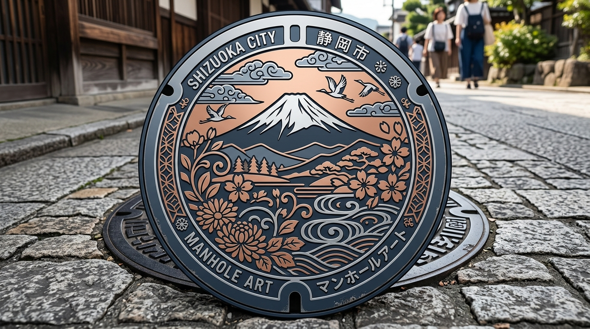
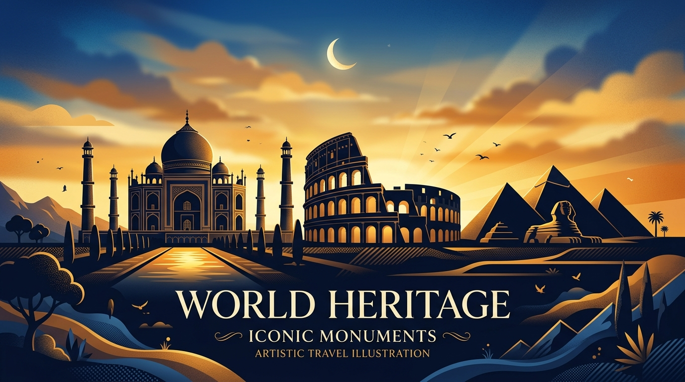

Puzzle
面積迷路
ひらめきと論理的思考力を鍛えるロジックパズル。複雑な計算を使わずに、長方形の面積と辺の比率から未知の長さを解き明かします。

Collectionマンホールカード
全国各地の鮮やかなデザインマンホールカードを集めて楽しむビューア＆マップ。地域の歴史や文化が詰まったご当地デザインを探訪できます。
Productivity
NoxMind
思考を自由に広げ、複雑なアイデアを明快に整理するグラフィカル思考キャンバス。ノードを自由につなぎ合わせて発想を爆発させます。

Education世界遺産マスター
世界中の素晴らしい文化遺産や壮大な自然遺産をめぐる知識クイズ＆ガイド。美しいグラフィックとともに世界遺産の魅力を学べます。
🔍
該当するプロジェクトが見つかりませんでした。